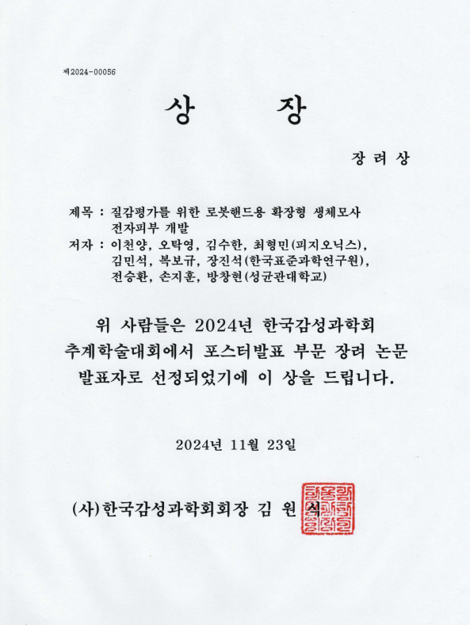

(사)한국감성과학회 『포스터발표 장려 논문 발표자』 선정
안녕하세요 피지오닉스 입니다!
2024년 11월 상명대학교 서울캠퍼스에서 개최되었던
한국감성과학회 추계학술대회에서
피지오닉스와 한국표준과학연구원, 성균관대학교에서 협업한 포스터가
포스터발표 부문 장려 논문 발표자로 선정되었다는 소식을 전해드립니다!

포스터 제목은 『질감평가를 위한 로봇핸드용 확장형 생체모사 전자피부 개발』 이며,
피지오닉스에서 최근 연구개발에 집중하고 있는
로봇핸드 하이브리드 센서 관련 내용으로 참가하여 받은 상이라서인지
연구원들 모두 뿌듯한 마음을 감출 수 없습니다 ^^
피지오닉스에서는 앞으로도
연구기관 및 대학과 적극적으로 협업하여
연구개발을 진행하고 여러 성과를 낼 수 있도록 노력하겠습니다!
앞으로도 많은 관심과 응원 부탁드립니다.
감사합니다^^~